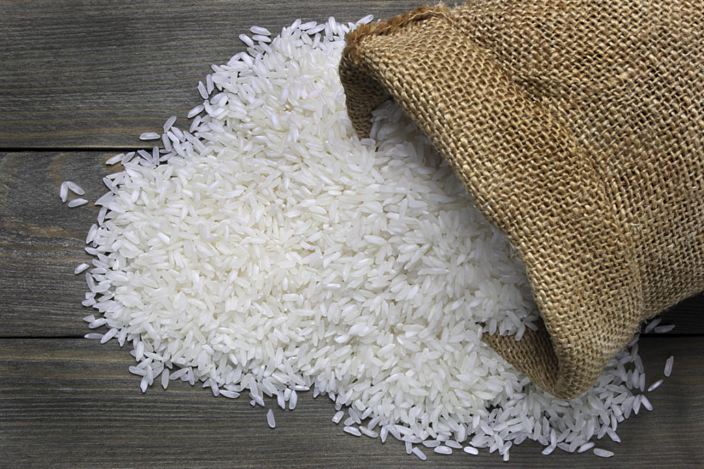

Odin Recipe: Base for the dish
Another base to add to the hot pot. The cool thing with rice is that it can be added to the broth after being cooked for a more soup like dish or keep it dry to place over it.
Rice is not a hard dish to cook; really just depends on teh texture you will personally wish to have.
What ingredients are needed? Just Rice!
Make it your choice, there isn't a whole lot to say on this front lol!
- White Rice
- Brown Rice
- Wild Rice
- Fried Rice
Cooking steps
1) Plug in Rice cooker
2) Fill rice cooker with level of rice you want for the meal
3) Clean rice out with pouring water for 2-5 minutes
4) Fill rice cooker with water once rice is poured in. Make sure to make water higher than rice by at least "1 knuckle" (about 1-1.5 inches higher.
5) Less water for dryer rice, more water for moist rice
6)Cook in Rice cooker for about 20-30 minutes until cooked (ENJOY HOMIE)
Additions to the hot pot